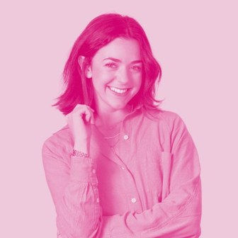
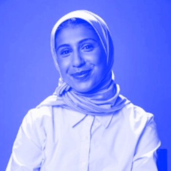

About

libbiefrost.com
rayouf.comWe believe taste is becoming the most durable competitive advantage in the age of AI. The companies that compound fastest have the clearest point of view on how they want to look, feel, and be understood. We started Creative Conviction to explore that with the people living it.
As investors, we have a unique vantage point of meetings with hundreds of entrepreneurs and companies, across moments, at the moments when creative decisions get made or are deferred.
Who is this for?
- The creative operator who seeks to understand how leading brand and design teams are built at scale.
- The founder who thinks about taste as a strategic asset and seeks a capital partner who sees it the same way.
- The investor or builder curious about creativity as a compounding force in company building.
For creative founders
We invest at Bessemer, and beyond capital, we can connect you with the designers, brand operators, creative directors, and agencies your company needs. Reach out at lfrost@bvp.com and ralhumedhi@bvp.com to get in touch.